CAUDALContenido de demostración
Caudal es un reproductor y no trae contenido propio. Este catálogo de demostración existe para poder enseñar la app (capturas, revisión de la tienda) sin usar canales ni obras de terceros con derechos reservados: todas las obras listadas abajo son cine abierto de la Blender Foundation y sus proyectos (Blender Institute / Blender Studio), publicadas bajo licencia Creative Commons Atribución (CC-BY).
Los carteles y logos de esta carpeta no son fotogramas de las películas: son
composiciones tipográficas propias hechas solo con CSS, sin imágenes ni marcas de terceros.
Los nombres de los canales de demostración son genéricos a propósito.
Las copias de vídeo que reproduce la lista de demostración proceden de espejos públicos de las
propias obras (archive.org y el bucket de muestras de Google) y de flujos de prueba públicos.
Películas
| Obra | Año | Autoría | Licencia |
|---|---|---|---|
| Big Buck Bunny | 2008 | Blender Foundation (proyecto Peach) | CC-BY 3.0 |
| Sintel | 2010 | Blender Foundation (proyecto Durian) | CC-BY 3.0 |
| Tears of Steel | 2012 | Blender Foundation (proyecto Mango) | CC-BY 3.0 |
| Elephants Dream | 2006 | Blender Foundation (proyecto Orange) | CC-BY 2.5 |
| Cosmos Laundromat | 2015 | Blender Institute (proyecto Gooseberry) | CC-BY |
| Spring | 2019 | Blender Animation Studio | CC-BY |
Series
| Serie | Episodios | Autoría | Licencia |
|---|---|---|---|
| Caminandes | Llama Drama (2013) · Gran Dillama (2013) · Llamigos (2016) | Blender Institute / Pablo Vazquez y equipo | CC-BY |
| Cortos de Blender | Glass Half (2015) · Hero (2018) · Coffee Run (2020) | Blender Institute / Blender Animation Studio | CC-BY |
Canales en directo
Los canales de demostración reproducen flujos HLS públicos pensados para pruebas. Cuando el flujo contiene una obra, es también cine abierto de Blender y se atribuye igual:
| Canal | Qué emite |
|---|---|
| Cine Demo | Big Buck Bunny (© Blender Foundation, CC-BY) en el flujo de pruebas público de Mux |
| Aventura Demo | Sintel (© Blender Foundation, CC-BY) en el flujo de pruebas público de Akamai |
| Sci-Fi Demo | Tears of Steel (© Blender Foundation, CC-BY) en la demo pública de Unified Streaming |
| Señal Técnica | Señal de pruebas de Apple (bip-bop), sin obra creativa |
Carteles y portadas
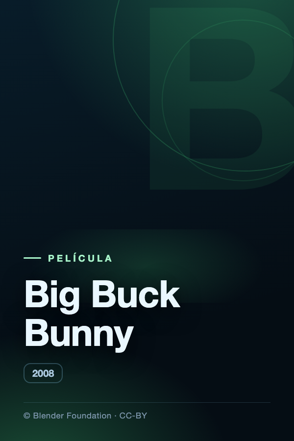
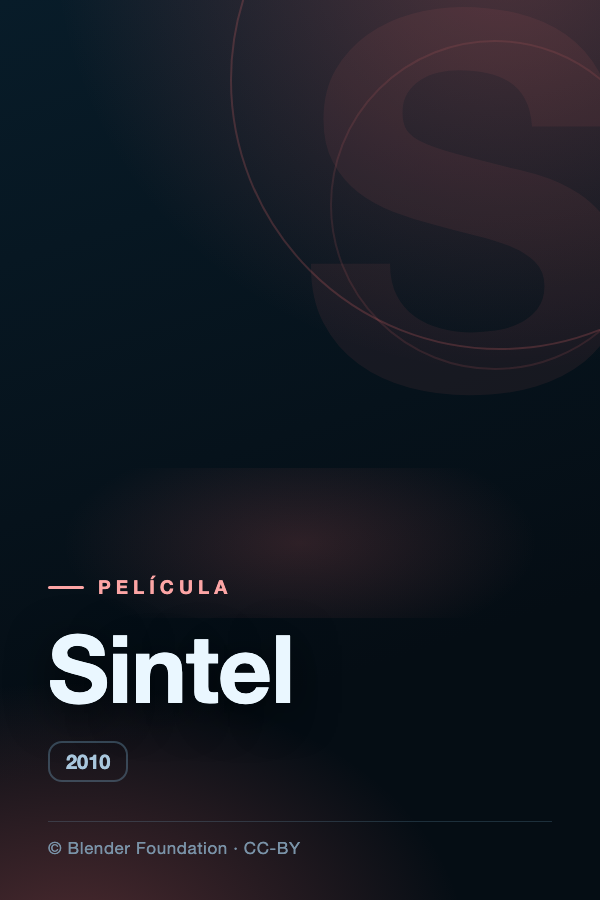
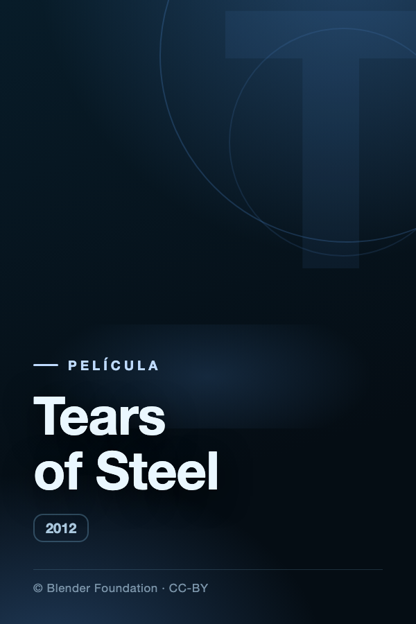
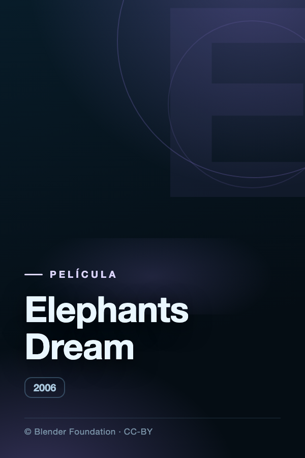
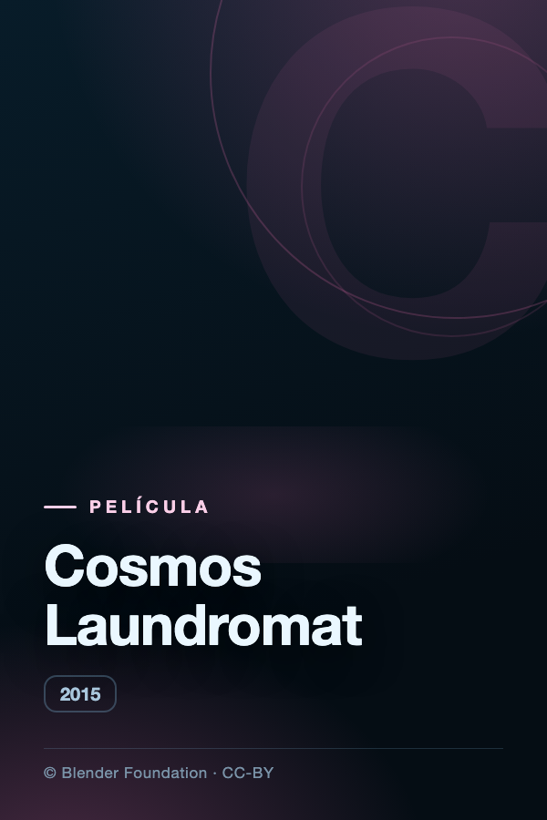
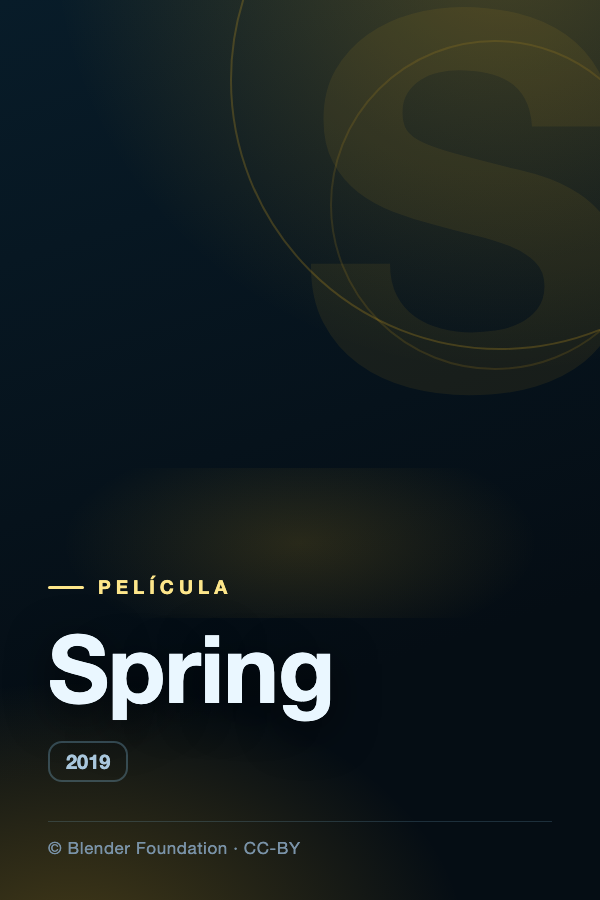
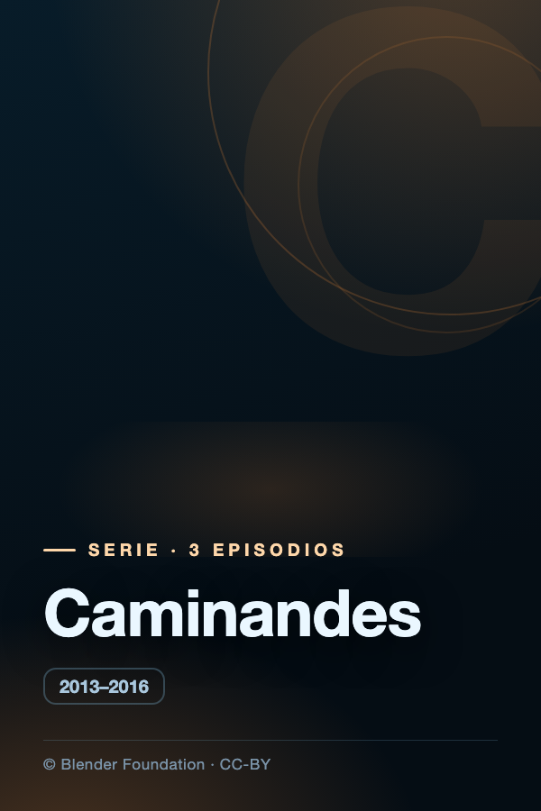

Logos de canal
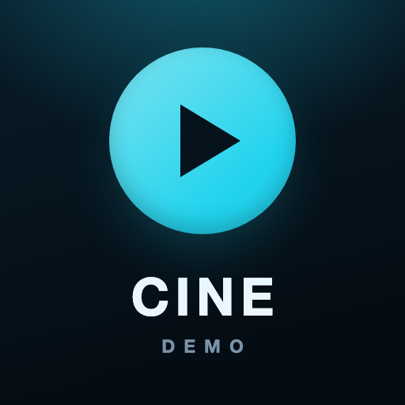
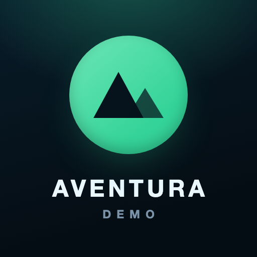
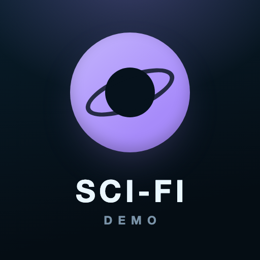
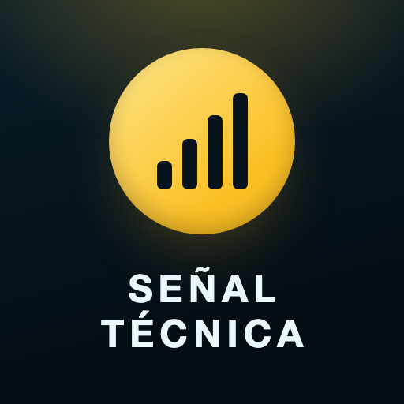